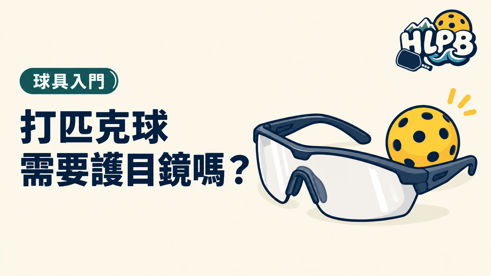

為什麼有人會戴？
近距離對打時，球或球拍可能靠近臉部。USA Pickleball 建議球員使用適當的眼部防護。這是降低風險的裝備，不保證完全避免受傷。
挑選時看三件事
- 防護：確認產品有清楚的抗衝擊防護標示與適用說明，不要把一般太陽眼鏡直接當成運動護目鏡。
- 視線：鏡片清楚，左右與上方視野不被明顯擋住。
- 配戴：跑動或低頭時不易滑落，也不會壓得不舒服。
若平時戴近視眼鏡，可詢問眼鏡專業人員適合自己的運動防護方案。更多裝備概念可看球具指南。
最後查證：2026-10-01｜資料來源：USA Pickleball 健康與安全；EyeWiki 眼部傷害預防
返回文章列表